Vote Meherunnesa Antara FOR VICE PRESIDENT-1 (STRATEGY)
Anthropology researcher, grassroots community mobilizer, and committed volunteer from Narayanganj. Bringing scientific research rigor, youth-first dynamism, and strategic institutional leadership to the Volunteer Development Forum (VDF).

Countdown to October 13, 2026
Every minute brings us closer to a more strategic, inclusive, and youth-driven Volunteer Development Forum.
Rooted in Research. Driven by Service.
Meet Meherunnesa Antara: an anthropology scholar and active field organizer uniting academic analysis with compassionate community action.
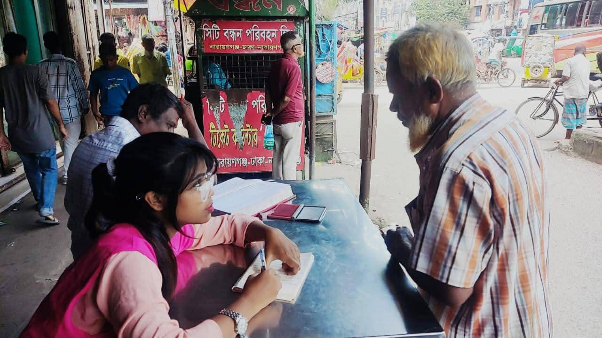
Academic Background & Grassroots Roots
Hailing from Borabo, Tarabo Pourashava, Rupganj, Narayanganj, Antara completed her HSC from the historic Govt. Murapara College and is currently pursuing her degree in Anthropology at Shaikh Burhanuddin Post Graduate College (2022–2026).
Her anthropological training is not just academic theory—it is her daily operational compass. Antara spends hours on the ground conducting qualitative field interviews, listening to transport workers, marginalized households, and vulnerable youth. She knows how to translate grassroots feedback into structured, evidence-based strategy.
Beyond volunteer coordination, Antara has honed Mobile Journalism (MoJo) skills to document unheard community stories and spotlight local challenges on national platforms.
Fairness
Equal voice for every volunteer
Teamwork
Collective decision-making
Patience
Respectful, active listening
Accountability
Transparent outcomes & metrics
Committed Blood Donor & Life-Saver
Antara is an active, regular voluntary blood donor. She believes true leadership starts with selflessness—standing ready at any hour to save human lives and mobilizing emergency youth blood donor networks across Narayanganj.
Why Vote for Antara?
Six pillars of actionable strategy designed to elevate VDF Narayanganj from local engagement to divisional excellence.
Youth-Led Strategy
Fresh, fearless perspectives grounded in anthropology and contemporary youth realities. Breaking traditional bureaucratic silos to place young leaders at the center of VDF planning.
- Digital volunteer ideation incubators
- Transparent committee roadmaps
- Youth-centric project ownership
Grassroots Field Experience
Extensive field experience with leading organizations including BRAC, SERAC Bangladesh, and The Hunger Project Bangladesh. Real insight from real ground challenges.
- Hands-on community outreach experience
- High-risk environment mobilization
- Established multi-agency volunteer networks
Community-First Approach
Direct, empathetic engagement with marginalized communities, informal transport workers, underprivileged women, and youth who are often overlooked in top-down planning.
- In-depth qualitative participatory research
- Safe spaces for vulnerable youth voices
- Dignity and respect in every initiative
Proven Track Record
Demonstrated impact across programs: from Project Tarunno youth mobilization to active social awareness campaigns with BRAC and national youth advocacy forums.
- Successfully coordinated civic campaigns
- Mobilized hundreds of youth volunteers
- Delivered concrete community milestones
Strategic Vision & MoJo
Bridging data-driven research with modern Mobile Journalism (MoJo) to document social impact, attract development partners, and secure strategic resources for VDF.
- Mobile Journalism & digital storytelling
- Data-backed project proposals
- Measurable KPIs for VDF programs
Life-Saver & Human Welfare
Committed blood donor championing health and welfare. Promoting institutional emergency response desks, blood donor databases, and proactive youth mutual aid networks.
- Narayanganj VDF Blood Donor Database
- Rapid response mutual aid brigades
- Mental health & volunteer well-being care
Tested Through Experience
A consistent record of grassroots leadership, community outreach, and civic advocacy across Bangladesh.
Volunteer (Social Awareness & Community Outreach)
Leading grassroots community awareness drives, engaging marginalized populations, and supporting community education on social welfare, health rights, and inclusive civic development.
Volunteer & Task Force Member
Active member of youth task forces championing reproductive health rights, youth civic engagement, and grassroots policy dialogues across divisional youth networks.
Project Tarunno Volunteer
Spearheaded youth civic engagement under Project Tarunno, training fellow youths in active citizenship, local community problem-solving, and participatory rural development.
Anthropology Field Research & MoJo
Conducting rigorous ethnographic field research on marginalized populations, informal labor, and community health. Applying Mobile Journalism (MoJo) to amplify unheard community voices.
Voluntary Blood Donor & Emergency Liaison
Regular donor and community coordinator connecting critical patients with emergency blood donors, advocating for non-remunerated voluntary blood donation among students.
Elevating VDF to New Heights
Rooted in the volunteer development philosophy of VSO Bangladesh, building an agile, impactful future for the Volunteer Development Forum.
About Volunteer Development Forum (VDF)
Volunteer Development Forum (VDF) is a premier platform dedicated to empowering passionate youth volunteers across Bangladesh. Inspired by the legacy and principles of Voluntary Service Overseas (VSO) Bangladesh, VDF mobilizes youth energy to tackle pressing local challenges—from health and climate to education and civic welfare.
As Vice President-1 (Strategy), Antara will architect a modern governance roadmap, ensuring every district initiative is measurable, sustainable, and directly accountable to its volunteers and community members.
Support the Strategic RoadmapData-Driven Impact
Establishing digital reporting tools and impact tracking to quantify volunteer hours and community reach across Narayanganj and the Division.
Volunteer Upskilling
Launching certified training modules in Mobile Journalism (MoJo), project cycle management, field research, and emergency first aid.
Strategic Partnerships
Connecting VDF with national development organizations, academic institutions, and corporate CSR wings to secure grants and program resources.
Inclusive Decentralization
Ensuring youth from peripheral pourashavas and rural upazilas of Narayanganj have equal voice and leadership representation in VDF decisions.
Community & VDF in Action
Authentic moments from community field interviews, VDF constitutional workshops, health outreach programs, and youth mobilization rallies.
Community Field Research in Narayanganj
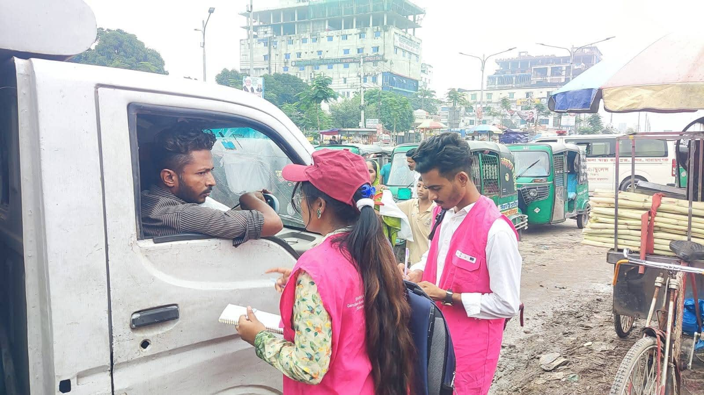
Street-Level Field Survey
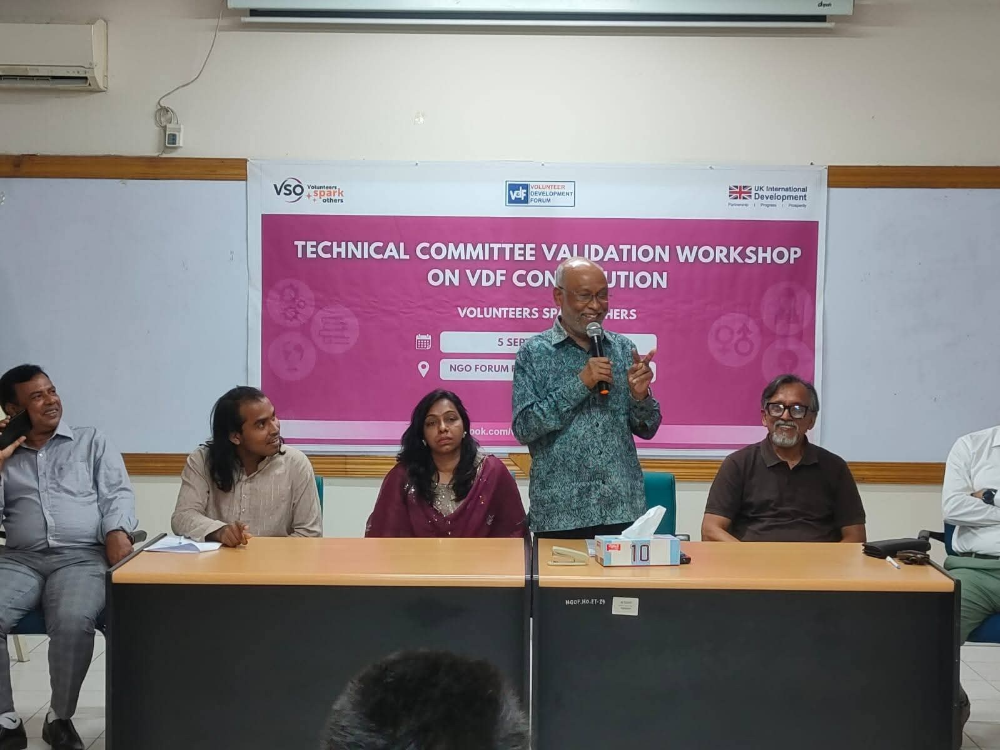
VDF Constitution Validation Workshop
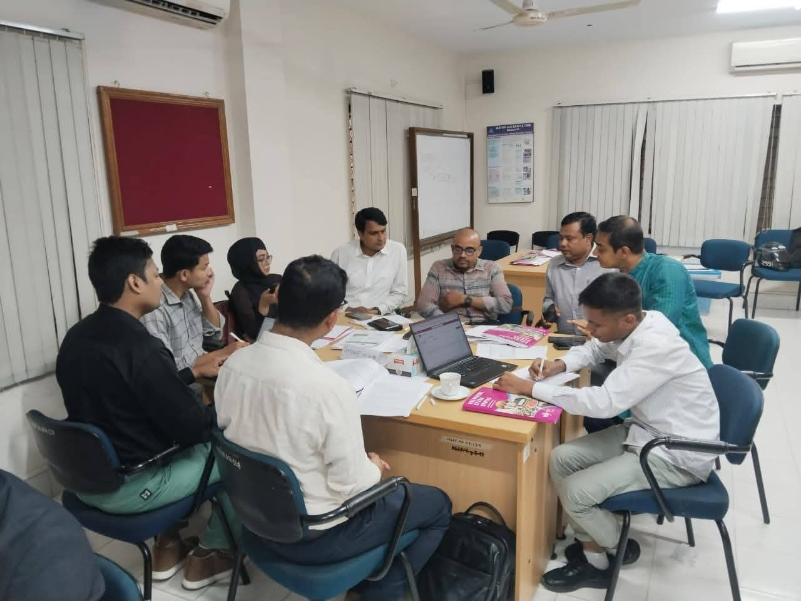
Strategic Planning & Review Session
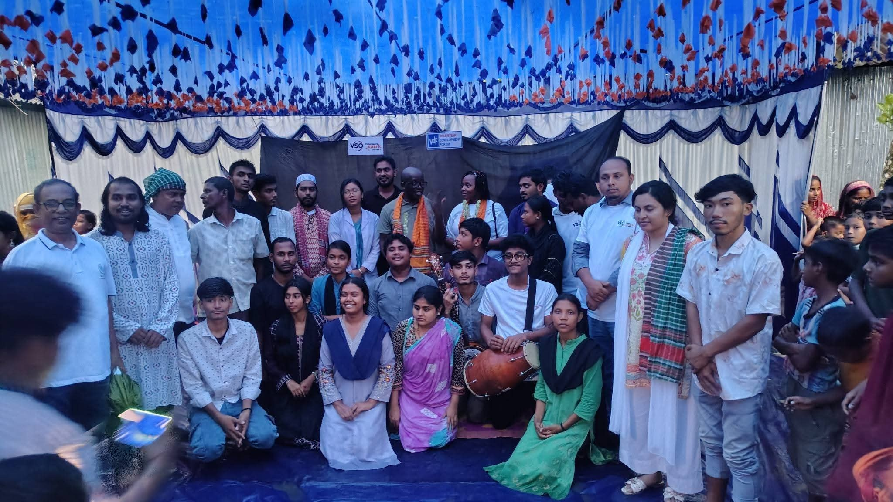
VDF & VSO Community Cultural Celebration
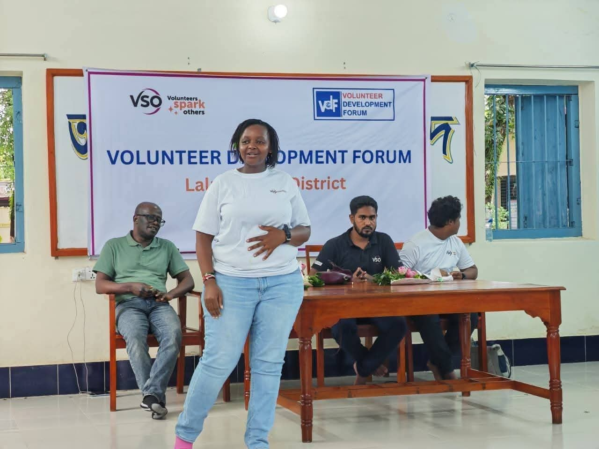
VDF District Knowledge Exchange
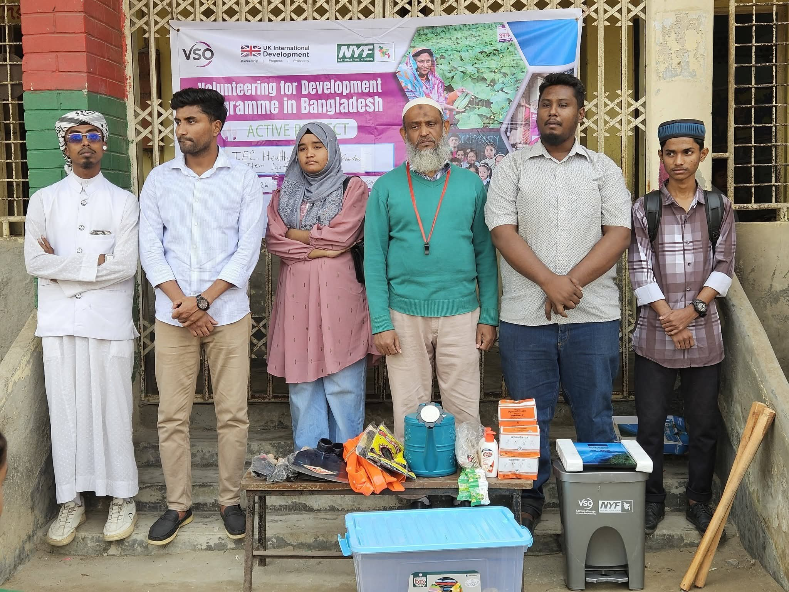
Community Health & Hygiene Distribution
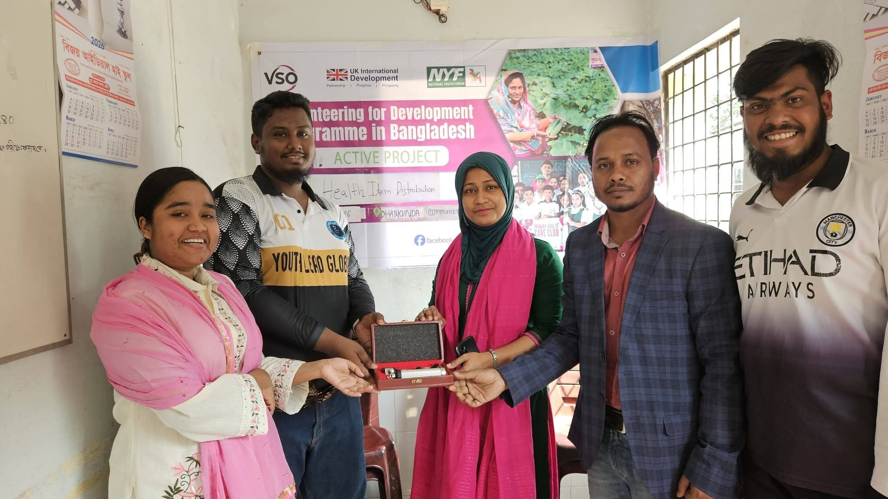
Health Equipment Community Handover
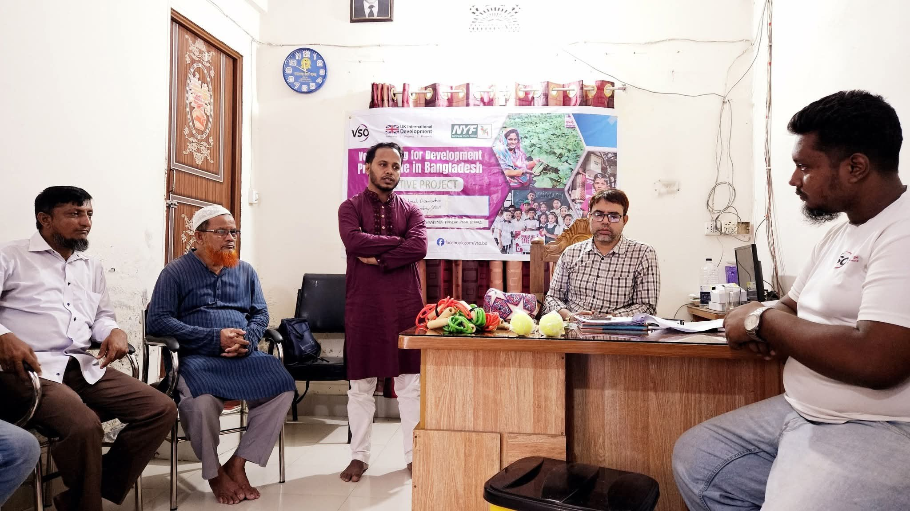
Community Consultation with Elders
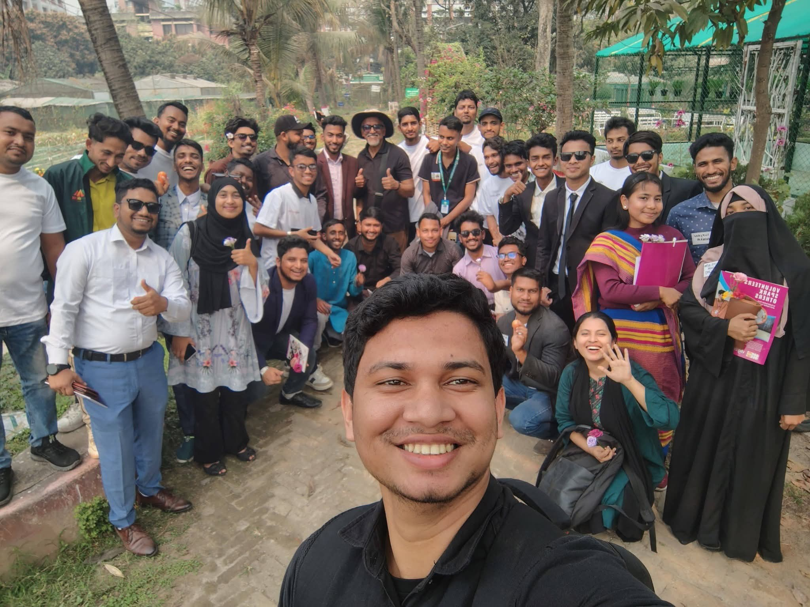
Youth Volunteer Solidarity Rally
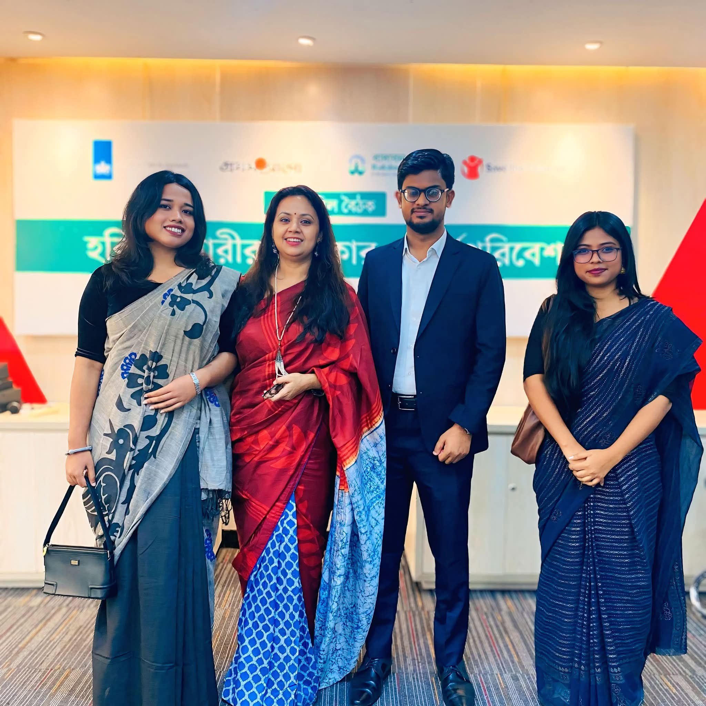
National Child Rights Symposium
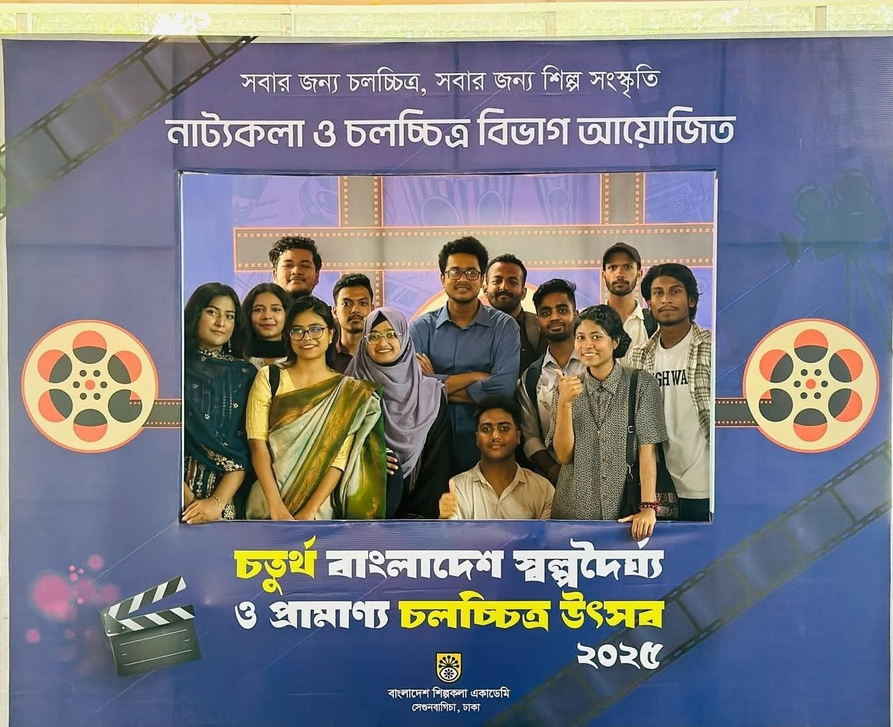
Bangladesh Documentary & Film Festival
Voices of Endorsement
What mentors, supervisors, and community partners say about Antara's character, discipline, and strategic mindset.
"Meherunnesa Antara brings a rare blend of field tenacity and structured strategic thinking to our community outreach initiatives. Whether engaging marginalized households or coordinating awareness events, her dedication is absolute and her empathy is genuine. She will be an outstanding Vice President for VDF."
"Antara stands out for her deep analytical inquiry and anthropological curiosity. She does not look at social issues from a distant textbook lens; she listens to people, respects diverse worldviews, and designs solutions that reflect reality. Her strategic leadership will bring institutional prestige to VDF."
Commit Your Vote & Get Your Supporter Card
Join thousands of youth across Narayanganj standing with Meherunnesa Antara. Fill in your details below to generate and download your personalized official Digital Voter Supporter Badge!
YOUR NAME HERE
Join Team Antara
Whether you can spare two hours on election week, coordinate on social media, or talk to fellow voters—every effort shapes our victory.
Volunteer Sign-up
Become an official campaign ambassador in your university, union, or local VDF unit.
Spread the Word
Help us reach every young voter in Narayanganj. Share the campaign on your favorite platforms in one click: